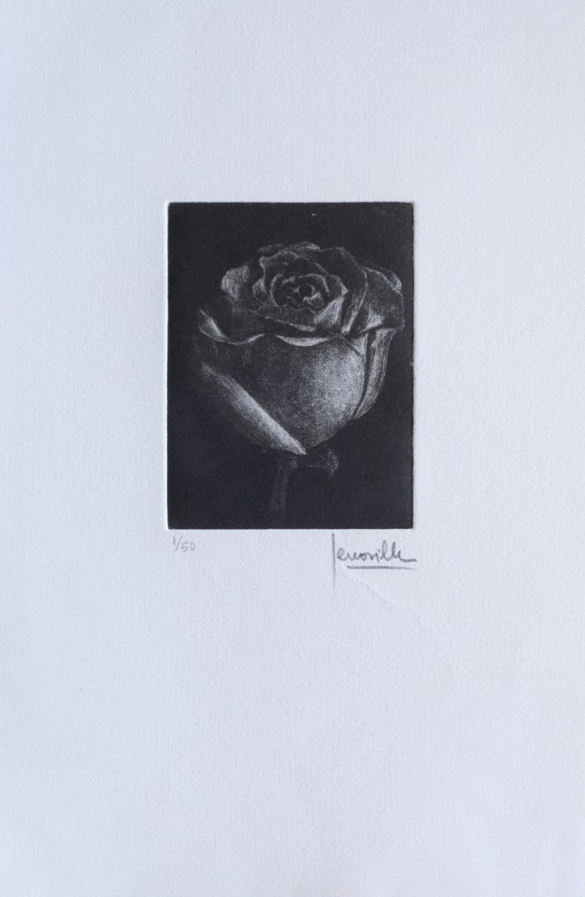

Óleo, acuarela y grabado.
[Presentación breve: qué pintas y grabas, desde dónde y cómo trabajas. Dos o tres líneas.]
Obra
Técnicas
Elige una técnica para filtrar la obra.
Retrato en el taller
Sobre mí
Jesús Senovilla
[Presentación: formación, trayectoria, qué buscas en tu obra y cómo trabajas. Tres o cuatro líneas.]
Firma
[Año][Exposición o premio], [lugar]
[Año][Exposición o premio], [lugar]
[Año][Exposición o premio], [lugar]
Consultas y encargos
Escríbeme →